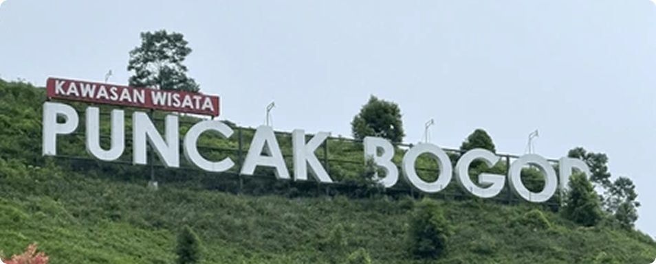
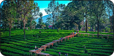
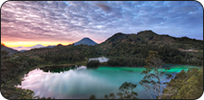
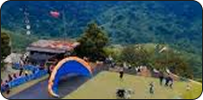
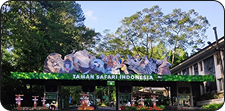

Kawasan Puncak Cisarua mulai berkembang sejak jalur Jalan Raya Pos dibangun pada awal abad ke-19. Terkenal dengan hamparan perkebunan teh peninggalan era kolonial, kawasan ini kini menjadi pusat rekreasi keluarga terbesar di Bogor dengan puluhan destinasi wisata satwa, alam, dan kuliner di sekitarnya.

Berjalan santai di antara hamparan teh yang hijau dan menikmati fasilitas tea walk serta berkuda.

Danau eksotis tersembunyi yang warna airnya dapat berubah-ubah akibat pantulan vegetasi sekitar.

Menikmati keindahan lanskap Puncak dari ketinggian udara bagi para pencinta petualangan ekstrem.

Berinteraksi dekat dengan satwa liar dari mobil pribadi di habitat yang menyerupai alam aslinya.
Pembelian tiket dapat dilakukan di loket resmi Kawasan Wisata Puncak, atau melalui platform tiket online mitra resmi.